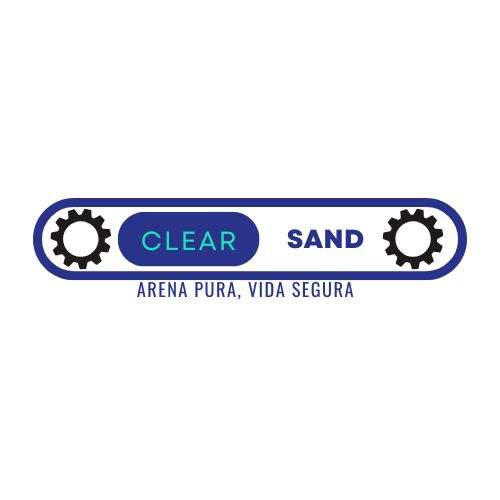

Clear Sand
Arena Pura, Vida Segura
Prototipo AreLim: Robot recolector y clasificador de residuos para la limpieza sostenible de playas
Sobre Clear Sand
La Problemática
Actualmente, las playas enfrentan una problemática ambiental cada vez más grave debido a la acumulación de desechos como plásticos, latas y vidrio. Esta contaminación no solo ocasiona un daño significativo a los ecosistemas marinos, sino que también perjudica la imagen turística de estos destinos.
De acuerdo con la Comisión Federal para la Protección contra Riesgos Sanitarios (COFEPRIS), en 2024 se emitió una alerta sobre seis playas en México que no son aptas para el uso recreativo debido a los altos niveles de desechos y bacterias.
Si bien existen esfuerzos manuales para mantener limpias las playas, estos resultan poco sostenibles a largo plazo. En respuesta, hemos desarrollado AreLim, una solución tecnológica orientada a optimizar la limpieza mediante el uso de robótica.

Prototipo AreLim
Arena Limpia - Robot recolector de residuos para playas
Control Inalámbrico
Manejado a distancia con control inalámbrico, facilitando su operación sin necesidad de contacto directo.
Cámara en Tiempo Real
Equipado con ESP32-CAM que transmite video en tiempo real, aumentando la precisión de la limpieza.
Tecnología Arduino
Programado con Arduino IDE, aprovechando las capacidades del ESP32-CAM para dirección y control.
Conexión WiFi
Conexión estable en un rango de 10 a 30 metros en campo abierto mediante punto de acceso WiFi.
Futuro del Proyecto
- Navegación inteligente autónoma
- Panel solar para energía renovable
- Estación de recarga automática
- Clasificación interna más detallada (vidrio, plástico, metales, etc.)
Cómo Funciona
Control Remoto
El operador maneja AreLim a distancia mediante un control inalámbrico, recorriendo distintas zonas de la playa según sea necesario.
Detección Visual
La cámara ESP32-CAM transmite video en tiempo real, permitiendo identificar residuos y navegar con precisión.
Recolección
El robot recolecta los residuos de la arena de manera eficiente, separando lo que es basura del entorno natural.
Clasificación
Sistema que separa material descartable (un solo uso) de material reutilizable: plásticos, metales, papel, cartón y vidrio.
Misión y Visión
Misión
Operar un sistema de recolección avanzado capaz de recoger y clasificar autónomamente los desechos en las playas, separando de manera eficiente los desechos orgánicos, metales y cristal, para contribuir a la conservación del medio ambiente, fomentar la cultura del reciclaje y así devolver una arena libre de impurezas.
Visión
Convertirnos en la solución innovadora y eficiente para la limpieza sostenible de las playas en el estado de Chiapas, ayudando a reducir la contaminación y fomentando la cultura de reciclaje, a partir de la recolección de residuos, y así expandiendo más el mercado hacia el reciclaje de estos.
Impacto Ambiental
Protección del Ecosistema
Evita que la basura llegue al océano y cause daños a la fauna marina y los ecosistemas costeros.
Clasificación Eficiente
Separa lo que es residuo de lo que forma parte del entorno natural, facilitando el reciclaje de materiales reutilizables.
Playas Limpias
Contribuye a mantener los espacios costeros limpios y saludables tanto para visitantes como para la vida silvestre.
Conciencia Ambiental
Promueve una cultura de respeto por la naturaleza entre usuarios, turistas y comunidades costeras.
Nuestro Equipo
Instituto Tecnológico Nacional Campus Tuxtla

Frida Sofía Vázquez González
Gerente
Héctor Lausse Gutiérrez Gómez
Técnico
Mía Monserratt Álvarez Bertruy
Marketing
David Raul Vazquez Yañez
Programador
Emiliano Villalobos Calderillo
Técnico
Ubicación
Instituto Tecnológico Nacional Campus Tuxtla
Proyecto: Clear Sand - Prototipo AreLim
Eslogan: Arena Pura, Vida Segura
📍 Tuxtla Gutiérrez, Chiapas, México
💼 Enfoque: Empresas recicladoras, economía circular y gobiernos municipales